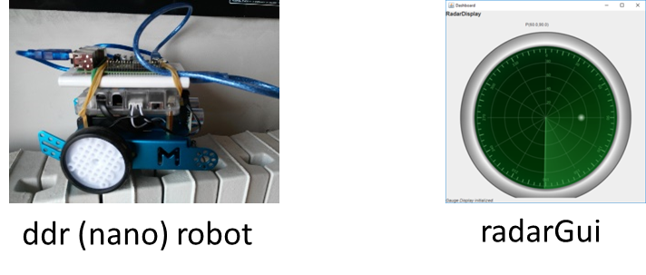
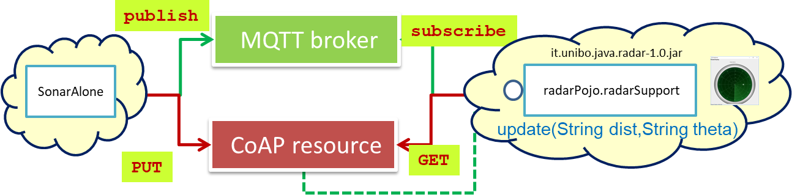
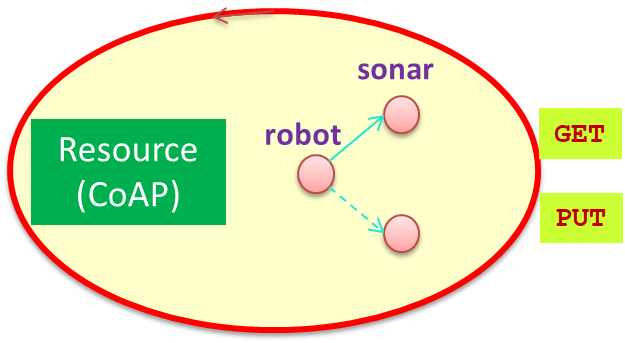
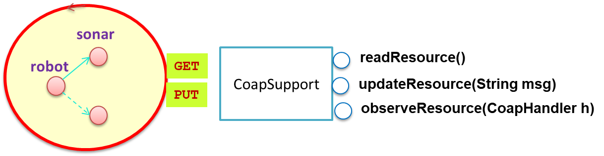
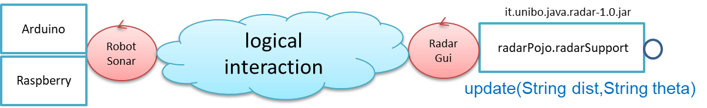
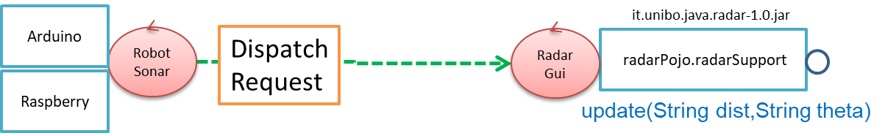
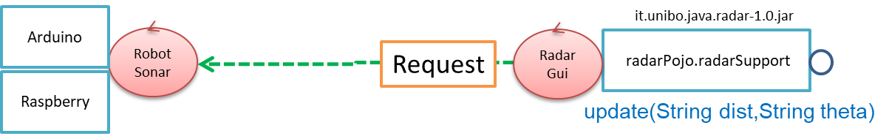
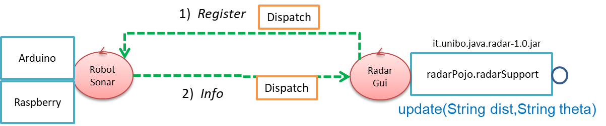
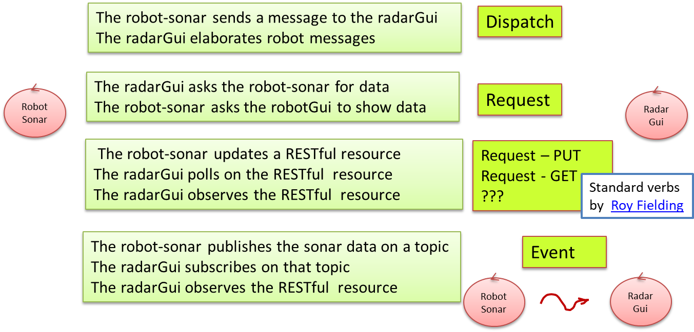

LabRadarGui | Radar GUI as a service (from BottomUp to TopDown)
In this work we will build a radarGuiservice that shows data on a graphical interface that looks like the screen of a radar. These data could be:- simulated by an user, by using a proper utility; for example
sonarDataSimulator.kt or
sonarDataSimulatorCoap.kt that read the data from a user console;
- produced by a HC-SR04 sonar device mounted on the front of a ddr robot (robot-sonar). For example,
SonarAlone.c that - on a RaspberryPi - reads sonar data from HC-SR04 and
writes these data on the standard output.

A bottom-up approach
In a bottom-up approach, the software designer must find a way to make the radar able to receive the sonar data produced by the robot-sonar. Thus, there are two main problems to solve:- Find a way to transmit data from the robot-sonar to the radarGui.
- Build a new radar component (the radarGuiservice indeed) able to receive sonar-data and to display them by using the available radarSupport.java
 |
The picture below shows two main component integration strategies:
 |
Direct communicationData might flow from the robot-sonar to the radarGui, by using a two-way point-to-point |
|  | Using a middlewareData might flow from the robot-sonar to the radarGui, by using a mediator, like a MQTT broker, a CoAP resource, a TupleSpace etc. |
In both cases we have to write proper code 'around' our starting available resources.
Interaction based on TCP
A direct communication based on some standard protocol (e.g. TCP) can be implemented in a quite easy way. The proxy design pattern can be taken as a reference point for the required modifications in our system architecture.The main project choice is related to question of the location of the server-TCP socket. The most 'natural' choice seems to activate a the server-socket on the node that runs the radarGui, by considering (in a IOT perspective) the radar as a 'service' used by the 'robot-as-thing'.
The task of building such a TCP-based system is left to the reader, with the goal to keep track of the time required
to build a working prototype and to 'document' in a proper way the solution.
A SPRINT Review meeting and Retrospective
A report about our meetings related to SPRINT Review and SPRINT Retrospective is given in LabRadarGuiTcp | Sprint Review that includes also some possible refactoring of the code.Interaction based on a CoAP-Resource
According to LabCoAP | Introduction to CoAP, let us introduce first of all a CoAP resource :| 
The device has robot as root and sonar as its sensor resource: 
|
public classThe CoAP Resource-Tree:
|
This resource allows us to acquire sonar data in RESTful way, by using the CoAP protocol. For example:
CoapClientHowever, as our second step, let us introduce anclient =new CoapClient() ; String uriStr ="coap://localhost:5683/robot/sonar" ;client .setURI( uriStr );CoapResponse respGet =; String sonarData = respGet. client .get()getResponseText() //The sonar-data value
The utility CoapSupport |
The class MyHandler implements |
Now, we can build our system:
The RadarGuiThe class RadarGuiCoap.java:
|
A sonar data source simulatorThe Kotlin object sonarDataSimulatorCoap.kt:
|
Run / deploy the system
- Execute RadarGuiCoap.java
- Launch sonarDataSimulatorCoap.kt
compile group: 'org.slf4j', name: 'slf4j-log4j12', version: '1.7.25'This library
- Requires the presence in the directory
src of the file log4j.properties - generates (at run-time) the file
log4jInfo.log
Using real sonar-data from the HC-SR04HC-SR04 device
Let us replace the sonar data simulator with an agent that runs on a RaspberryPi. It will use the SonarAlone.c to acquire data from the HC-SR04 device in order to update the CoAP resource. |
The radarGuiservice is now an observer of the CoAP resource that runs on a PC.
The CoAP resource can run both on the Raspberry and on the PC. See LabRobotRadar_2020 | A robot-radar system |
Beyond bottom-up
Of course, the structure of a CoAP-based system is completely different from the structure of a system based on a two-way, direct connection. Let us investigate now what kind of system could result by starting from a top-down (model-based) design.A top-down approach
In a top-down approach to software development, we aim at leaving technological details 'in the background' by focusing our attention on the 'logical-interaction' between our system components. Thus, our starting point could be represented as follows:|  | The Technological details (quite important in any case) are at the moment put 'behind the scene', 'embedded' within the agents. |
Interaction patterns
From the logical point of view, the robot-sonar could be viewed in two main different ways:- an
source agent that emits information - as a
resource that stores and provides data
- an
information-receiver agent that is able to 'perceive' information emitted by the source:- by using a two-way connection-based protocol (TCP, UDP, BTH, etc)
- by subscribing to a topic of a MQTT broker
- or as :
- a
resource-reader (that works in 'polling' mode) - a
resource-observer (that works according to the Inversion of Control Principle- orHollywood Principle )
- a
1.1) Using connection-based protocols
In this pattern, the robot-sonar agent can send information to the radarGui agent in two main, different modes:
- in a 'fire-and-forget' way.
- as a request to perform an action (e.g. show the data).
|  |
|
1.2) Using publish-subscribe
In this pattern, the robot-sonar agent works as a publisher of information (on a MQTT-topic), while the radarGui works as
a subscriber of information (on the topic).
 |
2.1) Polling
The idea of 'polling' is captured by a request-based interaction, from the radarGuito the robot-sonar.
|  |
2.2) Resource observation
In this pattern, the robot-sonar agent produces a state-change in a resource that can be 'observed'
by interested components, like the the radarGui.
|  |
Towards a standard set of high-level concepts
Let us introduce a more precise (although still informal) description of the terminology used so far:|  |
|
The set of high-level concepts introduced above, can be used during problem analysis to better understand the requirements and to avoid any premature technology-lock. Moreover, it can be used a a guide to design and build a run-time support able to allow a software designer to develop the interaction between the components of a software applications in terms of dispatch/request/event rather than in term of network-communication supports.
Building a platform
A proper run-time support has been developed in the project- ActorBasic.kt.
- ActorBasicFsm.kt is
an abstract class that extends ActorBasic.kt
by defining the method
actorBody ao to implement the behavior of a FSM. - ApplMessage.kt (that requires tuProlog).
- MsgUtil.kt.
ActorBasic
abstract class ActorBasic(val name: String,
val scope: CoroutineScope = GlobalScope,
val confined : Boolean = false,
val ioBound : Boolean = false,
val channelSize : Int = 50
) : |
 ActorBasic is an abstract class that implements the concept of qakactor as a message-driven entity that handles messages by delegating the work to the abstract the method actorBody The methods that an application designer can used to deliver messages are:
A received message of type: ApplMessage.kt (requires tuProlog). Some help in building and sending messages is given by MsgUtil.kt. The full code is in ActorBasic.kt |
Example
See RadarGui.ktActorBasicFsm
To provide actors with |
If no transition is possible, the message msg is discarded if it is an event; otherwise it us stored in a local queue. If the transition is possible, the actor goes into the next state related to that transition and then looks at empty moves or to transitions related to stored messages. The actor attempts to manage all the stored messages before looking to a new message.
This behavior is better described in
LabQak | ActorBasicFsm. The implementation is based on a
Kotlin internal DSL
|
Example
This kind of actor is introduced to be used together with a DSL. An example (taken from the code generated by the Qak factory) is in RadarGuiFsm.ktTowards distribution
An important internal requirement seems to arise at this point:... TO BE COMPLETED ...
A model-based approach
The Qak metamodel gives a formal definition of the terms introduced in High-level concepts, and is connected with a software factory (the it.unibo.Qactork_1.1.7. plugins for Eclipse) that provides a custom (Domain Specific) language and code generation that uses the run-time library (it.unibo.qakactor-1.2.jar) introduced in Building a platform. Using the Qak metamodel , the radarGui agent can be modeled as an actor able to handle messages (Dispatch, Request) or Events. Let us start with the case of messages.1.1) A P2P message-based system model
In this case, we model the radarGui as an actor able to handle either a Dispatch or a Request. The full code is radar.qak; however, let us introduce the model step-by-step:System robotradarsys |
|
The behavior of the actor
QActor |
The The states
State showSpotReply{
The state |
A working prototype can be easily built by introducing another actor (sonarsimulator) that performs message-sending.
QActor sonarsimulator context |
Afterwards, it sends a sequence of The Kotlin object sonarDataSimulator.kt provides the method Non-blocking requests
State workUsingRequestNoWait{
|
Final Notes (Sprint Review)
The model described in the file radar.qak, can be put in execution; this fact gives us the opportunity to interact quite soon with the customer, and to understand and fix the system requirements. All the technological details related to network communications are hidden behind the scenes in the Qak platform, that creates a TCP-server in each context (see LabQakIntro2020.html | QakInfrastructure).Initially, we put the sonarsimulator in the same context of the radargui. Later, it can be put in a different context and replaced by another actor that handles real data coming from a HC-SR04 sonar device.
1.2) Using a MQTT broker
Now, let us suppose that we want to change the component interaction by using the Message Queue Telemetry Transport (MQTT) protocol and a Mosquitto MQTT broker.In a bottom-up approach, it is highly probable that we have to change our code in a significant way. But we must ask ourselves whether the usage of a MQTT broker changes the logic of our system. If not, the model above is still valid, and we should 'only' replace the default QAk infrastructure (based on Context-TCP-servers) with another infrastructure that implements the high level concepts of Dispatch and Request by using MQTT.
This 'change of infrastucture' can be done by the QAk software factory by introducing a declaration for the MQTT broker to use and a
System |
All the messages sent to the radargui from actors working in a different Context, will be published on the topic named The radargui actor works as a subscriber on that topic, as described in LabQakIntro2020.html | mqtt The flag For an example of interaction with this version of the radarGui, see LabRadarUsage | Using the RadarGUI service |
2) Using CoAP resources
... TO BE COMPLETED ...